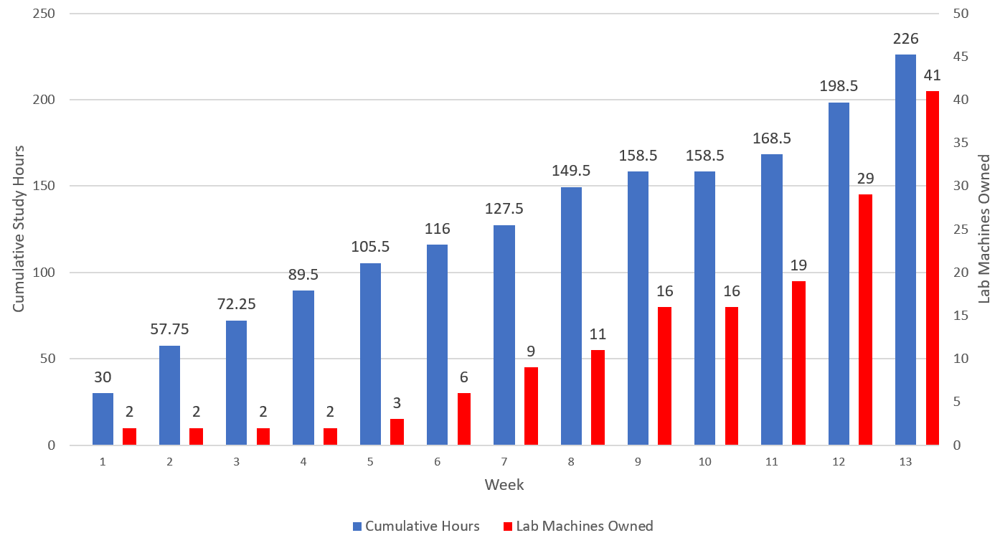

After three and a half months of intensive preparation and a lack of proper self-care, I took and passed the Offensive Security Certified Professional exam. More than that, I got a perfect score. Or at least, kinda. I did pass the exam with 100 points, however 10 of those points were a result of the lab report. As for the exam itself, I owned the Active Directory domain, two of the standalone machines, and got local access to the third. A week later, I still have no idea what the privilege escalation vector was on that last machine and it does bug me. Nonetheless, I am extremely proud of the amount of work I put in and would like to share my experience both to reflect on these past months as well as to attempt to provide some guidance to other potential test-takers out there.
By the way, feel free to skip around this blog post for the parts you’re interested in. This writeup is partly for me, and it’s definitely a wordy one.
Preparation Link to heading
The story of my preparation extends well beyond enrolling in the course three and a half months ago. My preparation truly began in the fall of 2019. I had just come off my first summer internship during which I began to take an interest in infosec after binging basically every Computerphile video ever made. As many others know, however, it can be quite difficult in security to find your way without having an accompanying job. Hacking was a subject that didn’t necessarily require anything but a laptop and a couple inexpensive subscriptions so that’s where I began. My first foray into hacking was via TheCyberMentor’s Intro to Penetration Testing course on YouTube. Having never touched Linux in any serious capacity and very little understanding of how operating systems, applications, and most protocols worked under the hood, this course was an excellent starting point. During the course, I discovered the OSCP and decided that my ultimate goal was to one day pass this exam. After completing that course and graduating from college, I purchased a subscription to HackTheBox, where I would spend my three months of post-graduation unemployment hacking as many machines as I could. Even after getting a job I continued this at less of a breakneck pace. By the time January of this year rolled around I had completed about 50 HackTheBox machines in total.
After enrolling in the course, I began to turn the heat up in terms of preparation. The first thing I want to highlight is just how much of a time investment obtaining the OSCP is. Below is a chart documenting the amount of time spent doing PWK exercises and lab machines:  This graph doesn’t depict everything done during that period. I simply made a point to document the amount of time spent on lab exercises and machines. I spent additional time doing informal preparation such as watching videos, reading CTF writeups, reading about different techniques, etc. I performed an actual penetration test right in the middle of my OSCP prep. After my lab time expired I spent about 80 hours over the two weeks leading up to the exam doing PG Practice machines and refining my methodology. During my lab time my mom also came and visited from across the world, during which I dropped everything to spend time with her. Totally worth it, by the way. The overall point I’m getting at is that to undertake this certification you’re going to need time, persistence, and a very understanding partner/family. Excluding the period that my mom had visited, I spent about 30 hours per week on intensive OSCP prep in addition to my normal work schedule. The experiences of others on the internet seem to largely align with mine, 200-300 hours seems to be pretty normal in terms of preparation.
Training Materials Link to heading
I used multiple different sources of materials for training, some of which were more helpful than others. I’m going to document them below in order from most helpful to least helpful.
PG Practice Link to heading
I began doing PG Practice machines after my lab time ran out and they were by far the most helpful machines in terms of preparing for the exam. I did 25 machines off of TJ Null’s list in a little under 2 weeks as a final sprint before the exam and they really helped me hone in my methodology and exposed me to some techniques that I otherwise wouldn’t have known. I found them to be far more true to the exam machines as well. If you are doing these machines and need an occasional hint or can’t figure out the path, I wouldn’t worry too much. In general I found some PG Practice machines to be more difficult than the exam machines. They certainly are a good barometer for where you’re at.
Grade: A+
PWK Lab Machines Link to heading
As documented above, I did 41 PWK lab machines in preparation for the exam. In general, I found many lab machines to be way too easy compared to the real deal, but they do teach some really important techniques (like pivoting) and help you learn to identify rabbit holes and benign misconfigurations. It was through these machines that I got very comfortable looking at an Nmap scan, winPEAS/linPEAS scan, etc. and identifying what is worth digging into versus what is noise. If you don’t have prior CTF experience then these machines are optimal in terms of difficulty and breadth of techniques learned.
Grade: B+
HackTheBox Link to heading
I’d been doing HackTheBox machines for about two and a half years leading up to my OSCP exam and can say that the machines are extremely high quality, the subscription is fantastic value, and I learned most of what I know from the platform. The machines are generally way more difficult than what you’d see on the exam and sometimes the attack vectors don’t align very well with what you’d expect from an OSCP-like machine. That is really my only criticism of HTB for OCSP prep. It’s a great platform for learning, but only okay for OSCP prep. IppSec videos are great for watching during your down time though, and I would absolutely recommend doing so.
Grade: B
TheCyberMentor Windows Privilege Escalation Course Link to heading
TheCyberMentor’s Windows Privilege Escalation course is a great course for helping refine your Windows internal enumeration methodology as well as demonstrating some of the most common privilege escalation vectors. If you feel unsure about your Windows capabilities this is a good starting point, but I personally gained a lot more out of hammering away at Windows machines on PG Practice. Hacking is an artform more than anything, and you get better at art by making art.
Grade: B
PWK Lab Manual and Exercises Link to heading
If you’re like most people, one of the first decisions you’ll likely make when enrolling in the OSCP is whether you want to do the PWK Lab Report for the 10 bonus points. To get those points, you need to complete every lab exercise as well as do a writeup for 10 different lab machines. The PDF is an 850-page beast and my lab report ended up nearly 400 pages, most of which was documenting the exercises. Lots of training material is a good thing, right?
With all due respect to Offensive Security, no. Don’t get me wrong, there are some really useful gems in that lab manual and I think there’s value in reading the modules for areas that you’re not comfortable with. I referenced back to the buffer overflow and pivoting modules frequently, for example. If you’re an absolute beginner the lab manual may be a useful tool for you, but I didn’t come into this as a beginner.
And the exercises, oh the exercises… To be frank, they were a tremendous pain in the ass. They were a waste of time and energy and were a drain on my motivation. I dreaded getting out of bed and doing them in the morning. I learned very little from them and OffSec’s insistence on you doing something a certain way was absolute madness. For example, at one point you have to crack a TGS ticket using a very specific tool prescribed by OffSec that doesn’t work appropriately on an up-to-date instance of Kali. The tool itself says “USE HASHCAT, IT’S HELLA FASTER!!” when you run it. No legitimate professional would recommend you use this tool over Hashcat or John, but OffSec does because… reasons? There were multiple similar examples related to unusable tools. Beyond tools, there were multiple instances in which you were asked to modify a script to complete an exploit, with the debugging and modification of the script taking longer than just writing a script from scratch. The issue I took with all of this wasn’t that I had to modify some script or monkey around with a tool, it’s the insistence on prescriptive methods for doing an exercise rather than encouraging the student to “try harder” by finding the best path forward.
The exercises took a little more than three weeks to complete, during which I didn’t do any lab machines. I only stuck with it for the bonus points, and even then I questioned whether it was really worth it. Feel free to come to that conclusion yourself, I can easily say it wasn’t worth it as the points didn’t end up being necessary. You might feel differently if you skip the lab report and fail with 60 points.
Grade: D-
Cheatsheets and Methodologies Link to heading
In addition to the training materials used, I heavily leaned on Cheatsheets and other people’s methodologies. There’s not much to say about this one, but here are some of the best resources I used:
- Carlos Polop’s HackTricks
- OSCP PrivEsc Methodology (C0nd4 on GitHub)
- dostackbufferoverflowgood (justinsteven on GitHub)
- Pentest Everything (mchern1kov on GitHub)
- Awesome OSCP (0x4D31 on GitHub)
- Mona.py the Manual
I might’ve missed some, but these were the absolute best resources. If this is information overload, I’d recommend the top four links to get started.
Exam Day Link to heading
I scheduled my exam for May 3 at 8:00 AM. This is all personal preference, but I wanted to give myself enough time to make a coffee and get set up without rushing or stressing. I woke up around 6:30 AM. I got set up with the proctor around 7:30 AM and waited patiently for my exam VPN to arrive in my inbox. Once I got the VPN set up and ran the troubleshooter, I couldn’t access any of the machines.
OffSec’s support staff were very helpful and quickly helped me find the issue. For anyone curious, make sure you’ve got some backup DNS servers in your /etc/resolv.conf file in case your main DNS server doesn’t play nice with their environment. That took up about 30 minutes worth of exam time, but I felt like stressing over it would be counterproductive and it was water under the bridge at that point.
My plan for the exam was that I could knock out Active Directory for 40 points and then simply need to own one standalone machine to get the necessary points (60 + 10 bonus points). The first challenge I decided to tackle was the Active Directory environment. Getting initial access to the AD environment was a bit tricky, but I did it in about two hours. Escalating privileges was easy. Post-exploitation was more difficult than I anticipated, but once I figured it out the whole environment came crumbling down pretty quickly. Including screenshots and creating a bullet-point writeup to reference when writing the report, the AD environment took me 4 hours to complete.
At this point, it was 12:30 PM and I was feeling good so I decided to go full speed ahead into the next machine. Gaining initial access to the machine was tricky, but once I found the vector I managed to get it pretty quickly. It took about 90 minutes to get initial access. I am very comfortable with Linux machines, so escalating privileges only took about 45 minutes. Including documentation and screenshots, I wrapped up the machine at 2:45 PM. By this point, I already had enough to pass.
I don’t know if it was confidence and adrenaline or I got lucky, but the next machine took barely more than an hour to own. Initial access took 45 minutes and privilege escalation took 30. At this point, it was 4:00 PM and I had 90 points.
The last machine I tackled was a buffer overflow machine. I really hadn’t practiced them all that much beyond doing the lab exercises (including the “Extra Mile” exercises), so I definitely made some mistakes during my exploit development process. Nonetheless, by 6:00 PM I had a low-privileged shell on the machine. I spent the next three hours trying to enumerate and escalate privileges with no success. I made sure that I had all necessary screenshots for this machine and called it a night after 13.5 hours of testing. I only took three small breaks to go to the restroom that day. My wonderful girlfriend brought me food from one of my favorite local restaurants and I drank about two liters of water. I would recommend that others take more breaks, eat more food, and drink more water than I did.
The next morning around 6:30 AM I got back online and tried to root the last system again, again failing. I have no idea what the intended vector was. At 7:45 AM I was locked out of the VPN and my exam was complete. I then spent the next 13 hours writing the report, taking about two hours’ worth of breaks that day.
I submitted my reports around 9:30 PM on May 4. I then waited patiently for a little more than 36 hours before getting the email that I passed the OSCP exam.
Reflections Link to heading
As one probably could guess based on what I’ve written here, I’m pretty happy with the way everything turned out. More than anything, I’m relieved that I passed as I was legitimately nervous that things would go sideways. I can safely say that, while rewarding, this process was extremely stressful and time consuming in a way that left me with a few white hairs that weren’t previously there. I certainly learned a lot and have a lot to be proud of. That being said, there are definitely some things I would’ve done differently with the benefit of hindsight.
First, I would’ve taken more time during my preparation to carve out a better methodology myself. I only really started giving that significant thought a few weeks before the exam and my notes showed it. The one thing I got right in this respect was adding attack vectors to my notes every time I came across a new one. It ended up being a useful arsenal and checklist for when I was stuck.
The second thing I would’ve done differently is focusing more on my sore spots throughout the entire preparation. Towards the end, I realized that my understanding of Windows was holding me back (especially related to privilege escalation) and really went hard into it with PG Practice. It was certainly enough in the end, but I think doing things you’re good at can lead you into this false sense of security. In college I was always particularly good about honing in on my weaknesses, I think the issue this time around was that I was so focused on pushing ahead that I rarely stopped to think strategically.
Lastly, I would absolutely think harder about the reporting piece of the exam prior to the day after the exam. As I mentioned, I captured all necessary screenshots so technically I was okay. What I didn’t mention is that during reporting I had to manually type out some of the commands and pieces of modified code as I had only bothered to take screenshots. Others have said that you should log all of your bash sessions for later reference, and in hindsight I absolutely agree. Additionally, always pull down outputs of commands both as text and as screenshots. It’ll save you a lot of work later on.
What I Did Right (Brief Advice to Test Takers) Link to heading
There are a few things I think I absolutely got right that I want to pass along to potential test takers. First, realize that you don’t know what you don’t know. Sometimes an intended attack vector is something you’ve never seen before. No amount of banging your head against the wall is going to help you. Take a hint, ask for help. It’s okay. Even in the last days leading up to the exam I was taking hints periodically on PG Practice. Learn from it, add it to your notes, and be done with it. I personally set a deadline. If I couldn’t find the attack vector in an hour then I took a hint. As a result I was able to complete more machines than I otherwise would have and learned from my weaknesses.
Second, and somewhat related: hacking is a numbers game. The absolute best thing you can do to prepare is to own as many machines as you can as it will expose you to the most attack vectors. There’s diminishing returns, for sure. Overall, however, I was still learning about different attack vectors after machine 100. There’s a good reason that the correlation between the number of PWK machines compromised and OSCP pass rate is positive.
Was it worth it? Link to heading
Yes.
Despite the stress, time commitment, and having a Kali terminal burned permanently into my eyes as if they were an OLED screen, it was more than worth it. My opinions about the training material may not have been that high, but my opinion about the lab machines and the practical exam format is. I think it’s pretty hard to be a paper tiger and get this certification, and obtaining it certainly gave me a confidence boost and reaffirmed that I’m heading in the right direction.
What’s next? Link to heading
Definitely a good deal of rest. Probably some exercise, sunlight, and healthy cooking as well. I’ve got a backlog of interesting topics to read more into and write about. Perhaps what I’m most excited about is shifting focus from strictly CTF writeups to exploitation techniques as well as mitigations and defenses. I’ve proven to myself that I can do the offensive stuff, so now my goal is to round out a little bit.
Stay tuned!
Acknowledgments Link to heading
I want to thank my wonderful girlfriend, my family, and her family for being there when I needed them. The OSCP is such an investment in terms of energy and time that those Sunday night calls with my family, late nights watching fun TV shows with my girlfriend, and wonderful home-cooked meals from her family really did a lot to keep me going and feeling good despite being otherwise worn down.